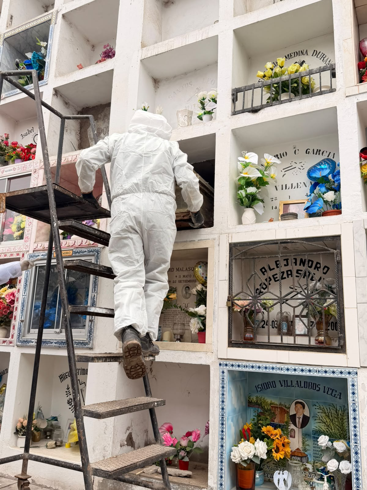

Somos una empresa especializada en servicios funerarios, creada para brindar atención profesional, humana y oportuna en uno de los momentos más difíciles de la vida. Acompañamos a las familias con respeto, sensibilidad y responsabilidad, ofreciendo soluciones integrales para cada necesidad.

Brindamos atención inmediata a las familias que atraviesan el fallecimiento de un ser querido, encargándonos de coordinar y gestionar los diferentes aspectos necesarios para el servicio funerario, con orientación permanente y acompañamiento oportuno, respetuoso y profesional.